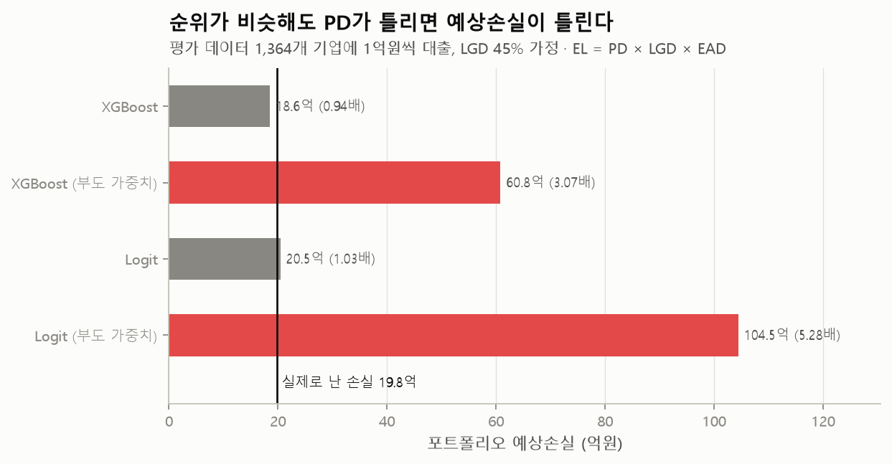
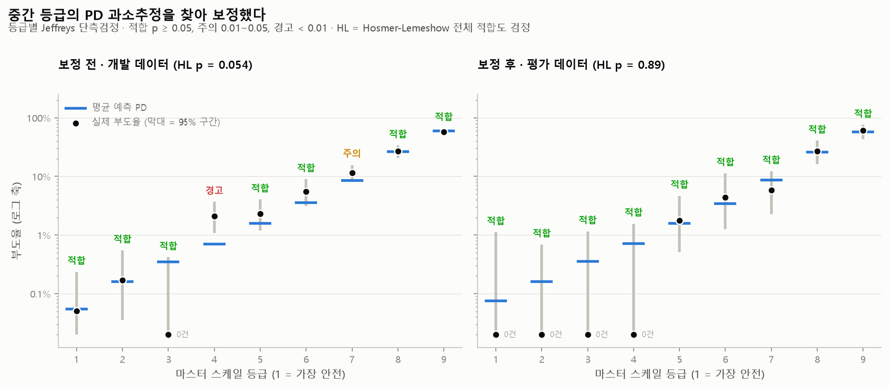
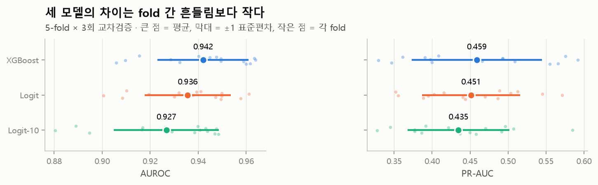
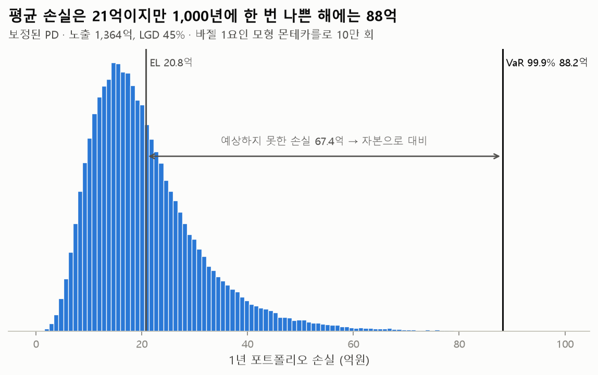
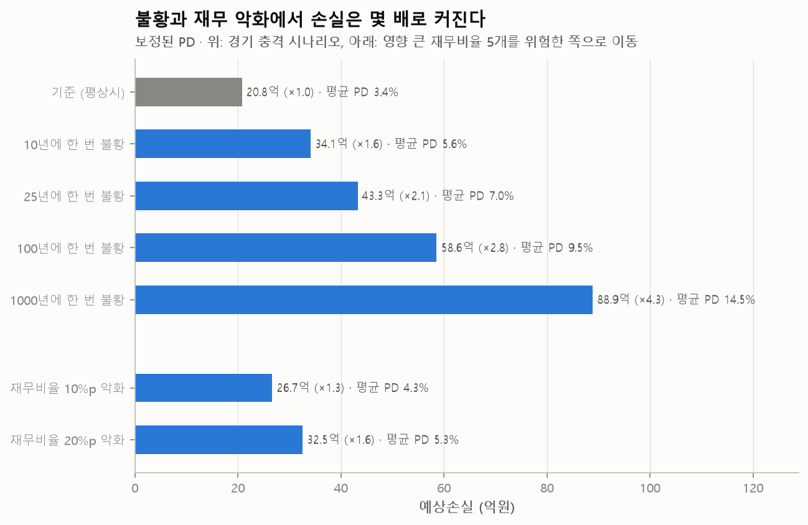

재무비율로 기업의 부도확률(PD)을 예측하고, 그 확률을 검증·보정한 뒤 예상손실, 신용 VaR, 스트레스 테스트까지 이어간 신용리스크 관리 프로젝트
| 기간 | 2026.10 |
| 인원 | 개인 |
| 데이터 | 대만 상장기업 6,819개 (1999~2009년, UCI 공개 데이터), 재무비율 95개, 부도 220개 (부도율 3.2%) |
| 주요 기술 | Python, pandas, scikit-learn, XGBoost, SHAP, SciPy, matplotlib, pytest |
| GitHub | sung-ju-park/corporate-default-prediction |
금융기관은 기업의 부도확률(PD)로 등급을 매기고, 예상손실(EL = PD × 부도 시 손실률 × 노출금액)로 충당금을 쌓고, 나쁜 해에 대비해 자본을 준비합니다. 그래서 부도 예측 모델은 위험한 기업을 위에 세우는 순위와, 예측한 확률이 실제 부도율과 맞는 확률을 모두 맞혀야 합니다. 이 프로젝트는 두 가지를 모두 검증하고, 그 PD를 손실과 자본으로 바꾸는 데까지 따라가 보는 것이 목표였습니다.
부도 기업이 3%뿐인 불균형 데이터에서는 부도 기업에 가중치를 주라는 조언이 흔합니다. 직접 비교해 보니 순위 성능(AUROC)은 오르지 않았고, 예측한 PD가 실제 부도율의 3~5배로 부풀었습니다. 순위만 보면 드러나지 않는 문제지만, 이 PD로 예상손실을 계산하면 실제 손실의 3.1~5.3배가 나옵니다.

가중치 없이 학습한 뒤, 실제 등급 체계처럼 PD 구간으로 고정한 9개 등급마다 "예측 PD가 맞다면 이만큼 부도가 날 수 있는가"를 검정했습니다. 개발 데이터에서 4등급이 '경고'였습니다. 예측 0.71%인데 실제 부도율은 2.09%로, 예측대로라면 이만큼 부도가 날 확률이 0.1%에 불과했습니다.
개발 데이터의 out-of-fold 예측으로만 Platt 보정(파라미터 2개)을 적합해 평가 데이터 정보가 섞이지 않게 했고, 순위를 바꾸지 않는 변환이라 AUROC는 그대로 유지됩니다. 독립된 평가 데이터에서 9개 등급이 모두 적합으로 나왔고 전체 적합도도 좋아졌습니다(Hosmer-Lemeshow p 0.641 → 0.886). 다만 평가 데이터는 보정 전에도 모두 적합이었고 부도가 44개뿐이라, 보정의 효과를 평가 데이터로 강하게 주장하지는 않았습니다.

세 모델의 교차검증 AUROC는 XGBoost 0.942, 로지스틱 회귀 0.936, 변수 10개 로지스틱 회귀 0.927이었습니다. 차이가 fold 간 표준편차(약 0.02)보다 작고, 평가 데이터에서도 차이의 95% 신뢰구간이 0을 포함했습니다. 그래서 설명이 중요한 금융에서는 단순한 모델을 기본으로, XGBoost를 비교용으로 두는 구성도 합리적이라고 결론 냈습니다.

보정된 PD로 1,364개 기업에 1억원씩 빌려준 가상 포트폴리오의 손실을 시뮬레이션했습니다. 평균 손실은 20.8억이지만 1,000년에 한 번 수준의 나쁜 해에는 88.2억(99.9% VaR)까지 커지고, 그 차이 67.4억이 자본으로 대비해야 할 예상하지 못한 손실입니다. 같은 값을 바젤 IRB 공식으로도 계산해(68.1억) 시드에 따라 −1.0% ~ +4.3% 범위에서 일치하는 것을 확인했습니다.

스트레스 테스트에서는 100년에 한 번 불황에서 예상손실이 2.8배, 부도 예측에 영향이 큰 재무비율 5개가 20%p 나빠지면 1.6배가 됐습니다. 마지막으로 놓친 부도 기업은 빚 지표가 정상 기업과 비슷해, 재무제표만으로는 드러나지 않는 부도가 있고 주가 기반 부도확률(EDF) 같은 시장 정보가 필요하다는 한계도 확인했습니다.
